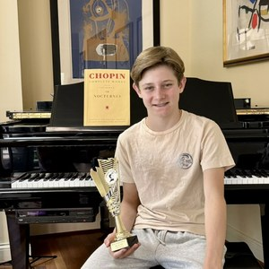
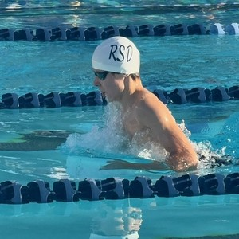
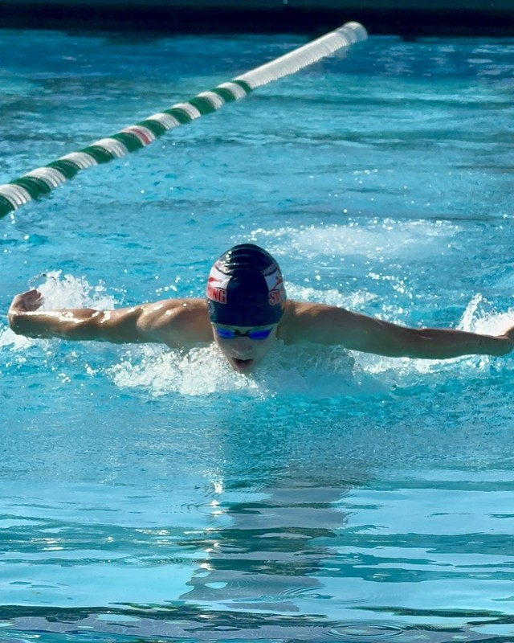
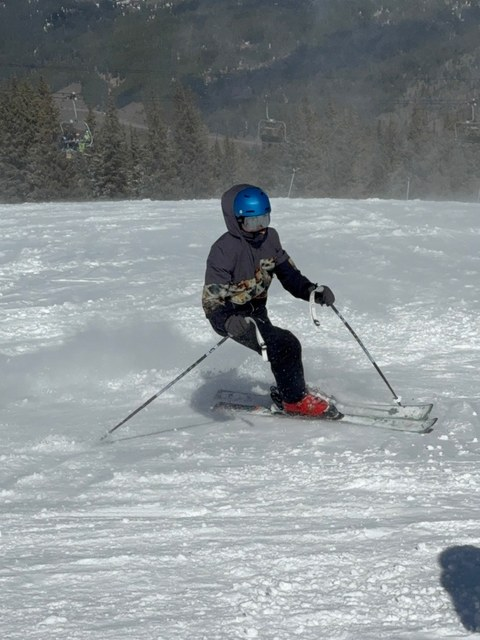
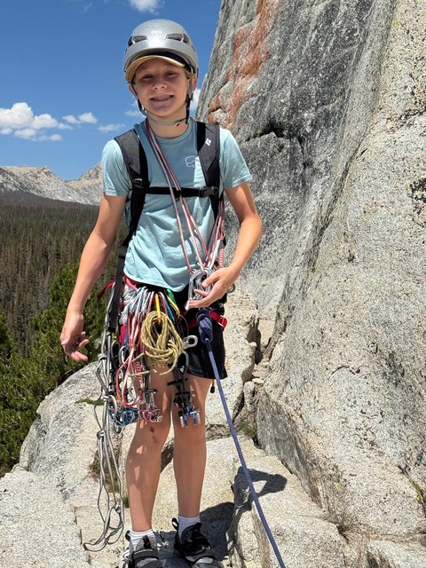

Pianist studying with Chetan Tierra. Competitive breaststroke swimmer for Rancho San Dieguito. 2026 MTAC San Diego Chopin Festival winner, Nocturne category.


I’ve been playing piano since I was seven, studying with Chetan Tierra at the San Diego Piano Academy — a teacher, composer, and musician whose influence runs through everything I play. What started with Faber books has grown into Debussy, Chopin, Beethoven, and Brahms. This spring I took first place in the Nocturne category at the MTAC San Diego Chopin Festival, playing Chopin’s Nocturne Op. 27 No. 2 — a result that surprised me as much as anyone.
Outside of music, I swim competitively for Rancho San Dieguito — breaststroke is my event. This past summer brought some of my best times yet, including a breakthrough 50 breast at Splash & Dash and a meet-record IM relay at the Age Group Championships. I started freshman year at Canyon Crest Academy this fall.
This site is a record of where I’ve been and where I’m going.

I’ve done two building trips with Casas de Luz so far — one at the end of sixth grade, another this past Memorial Day weekend — and I’m hoping to make it an annual thing.
The rest of my time outside music and the pool tends to go to skiing at Mammoth and Steamboat (fast enough that my dad has a hard time keeping up), climbing at Mesa Rim and on real rock in Yosemite, and whatever else comes with traveling — ziplines included.

